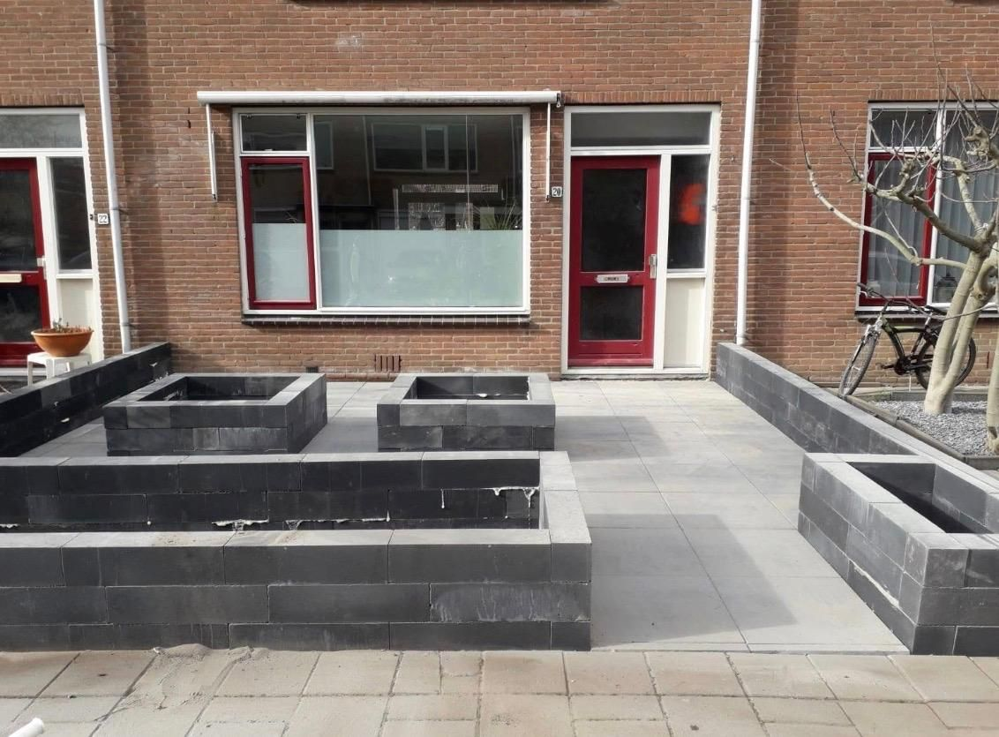
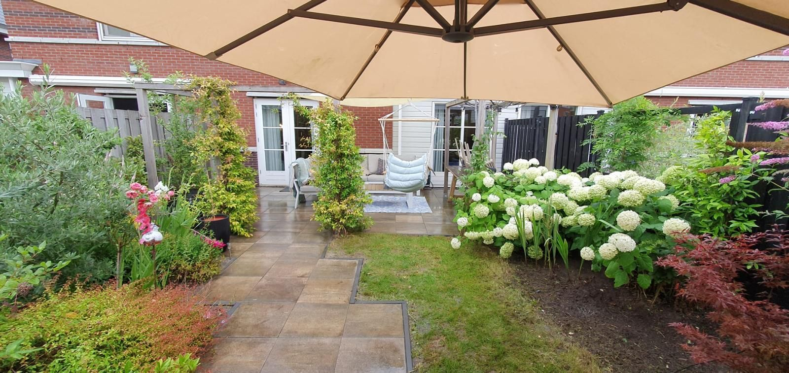
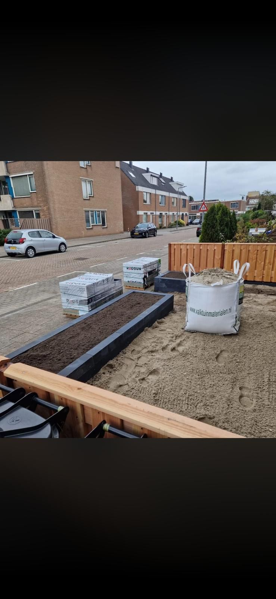

Hovenier in Dordrecht en de Drechtsteden
Jouw droomtuin, ons vakwerk
Schuttingen, bestrating, aanleg en onderhoud. Materialen los of met montage.
Jouw tuin, jouw keuze
Bekijk jouw tuinidee in 3D
Geen ervaring met ontwerpen of meten nodig. Je kiest wat je mooi vindt, wij laten zien hoe het eruit kan zien.
Voorbeeld in 3D, geen echt project.
Wat wil je toevoegen?





Je kunt ook meteen hulp of een offerte vragen. Een ontwerp is nooit verplicht.
- Gratis bezichtiging in Dordrecht
Buiten Dordrecht bespreken we vooraf of er voorrijkosten gelden. - Offerte met wat wel en niet inbegrepen is
Materiaal en werk staan apart, zodat je ziet waarvoor je betaalt. - Eigen werk, echte foto's
Alle projectfoto's op deze site komen uit ons eigen werk.
Waar kunnen we je mee helpen?
Kies wat het beste past. Twijfel je? Dan denken we graag met je mee.





- Hulp bij kiezenWeet je het nog niet? We denken met je meeBekijk


Echte tuinen. Echte resultaten.
Een greep uit ons eigen werk in Dordrecht en de Drechtsteden.

Alleen materiaal bestellen of ook laten plaatsen?
Beide kan. Je ziet altijd eerst wat het kost en wat je krijgt, voordat je ergens aan vastzit.
Alleen materiaal
- Schuttingen, tegels, plantenbakken en meer
- Wij helpen je de juiste maat en hoeveelheid te kiezen
- Prijs en levering staan in je offerte
Materiaal met montage
- Wij leveren en plaatsen, jij hoeft niets te regelen
- Oude schutting of tegels weghalen kan er optioneel bij
- Eén offerte: materiaal en werk apart zichtbaar
Online bestellen is nog niet geopend. Je vraagt nu een offerte aan. Wij bevestigen vooraf de prijs, de levering en wat er wel en niet bij zit.
Zo werkt het
- Kies wat je zoektSchutting, terras, plantenbakken of onderhoud.
- Bekijk voorbeeldenZie in 3D hoe jouw idee eruit kan zien.
- Geef je maten doorPrecies, ongeveer of met een foto. Wij controleren.
- Ontvang je offerteDuidelijk wat inbegrepen is, wat optioneel is en wat nog moet worden gecontroleerd.
- Levering en plaatsingNa jouw akkoord plannen we het samen in.
Veelgestelde vragen
Ik weet niet hoe ik moet meten. Kan ik toch een offerte aanvragen?
Ja. Geef een schatting, stuur een foto of beschrijf de plek. Wij controleren de maten voordat een prijs definitief wordt. In de ontwerphulp staat per maat uitgelegd wat je moet opmeten.
Kan ik alleen materiaal laten opnemen in een offerte?
Ja. Je kunt materiaal los vragen of samen met montage. Online bestellen is nog niet geopend; wij bevestigen prijs en levering in de offerte.
Wat kost een schutting?
Dat hangt af van het materiaal, de hoogte, de lengte, de ondergrond en of oude schutting of tegels moeten worden weggehaald. Daarom geven we geen vaste lijstprijs. In de offerte staat per onderdeel wat het kost.
Wat is het verschil tussen hout, hout-beton en composiet?
Hout heeft een natuurlijke uitstraling en vraagt periodiek onderhoud. Bij hout-beton staat het houten scherm op een betonnen onderplaat en betonnen palen. Composiet vraagt meestal minder onderhoud. Het verschil per product vermelden we in de offerte.
Werken jullie ook bij mij in de buurt?
Wij werken in Dordrecht, de Drechtsteden en Rotterdam e.o. Bekijk het werkgebied of vraag het ons.
Vertel ons je tuinidee
Plan een gratis, vrijblijvende kennismaking in Dordrecht, of stuur ons een bericht via WhatsApp.